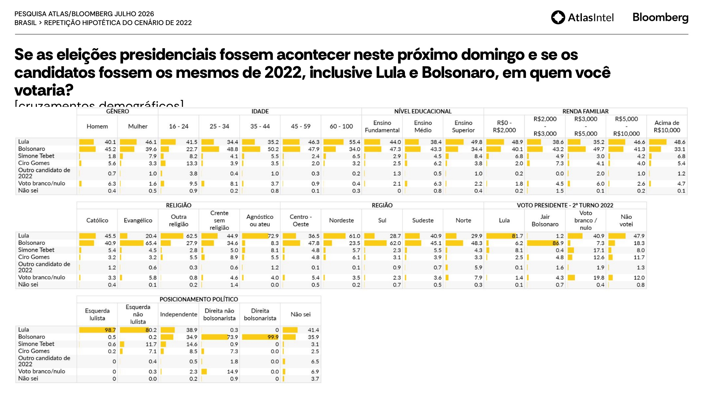
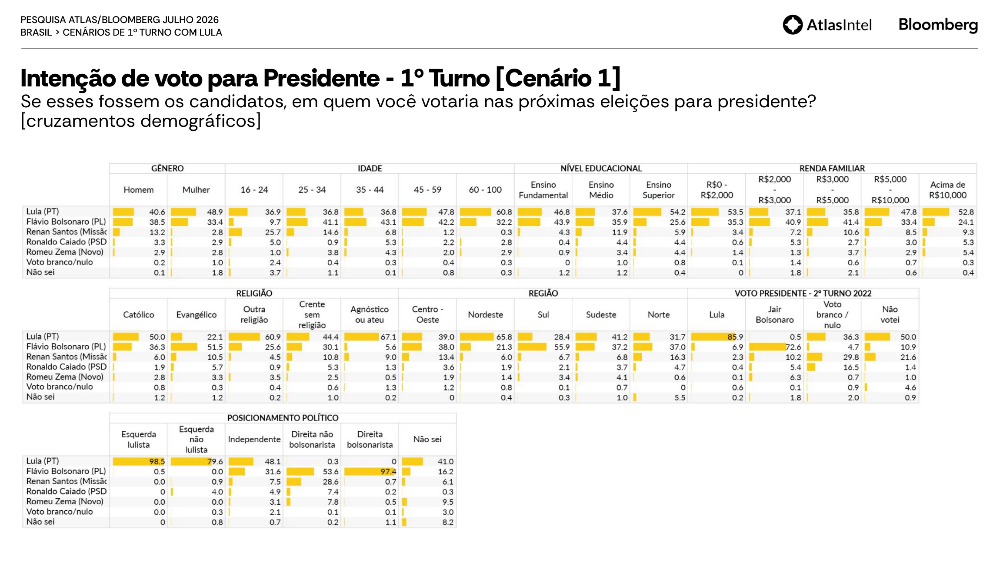
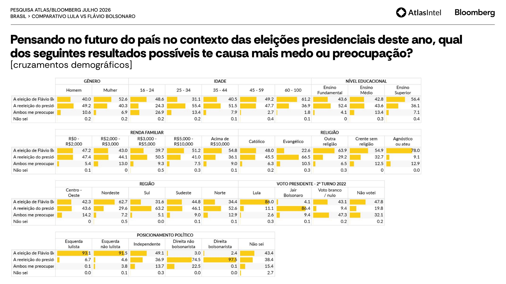
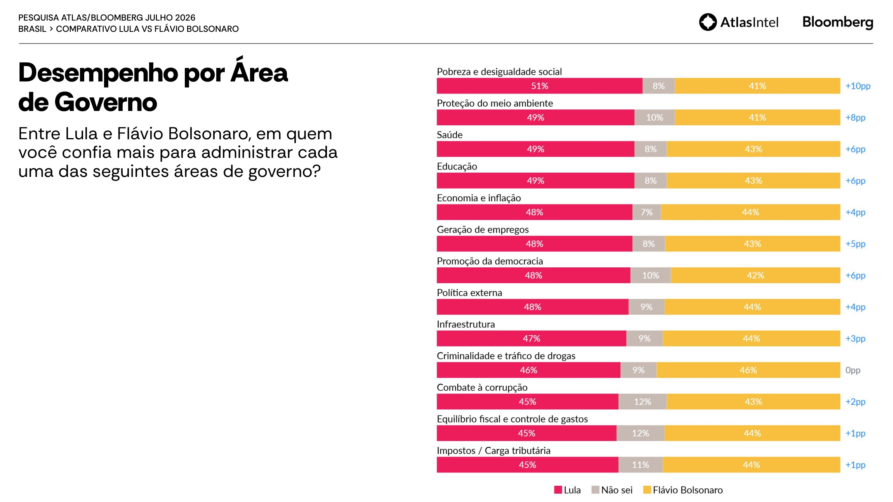
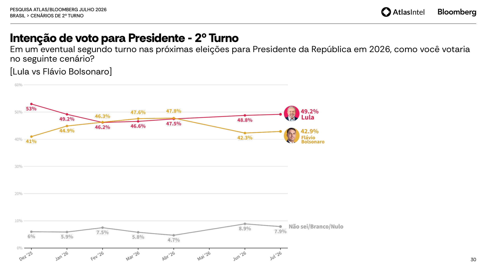
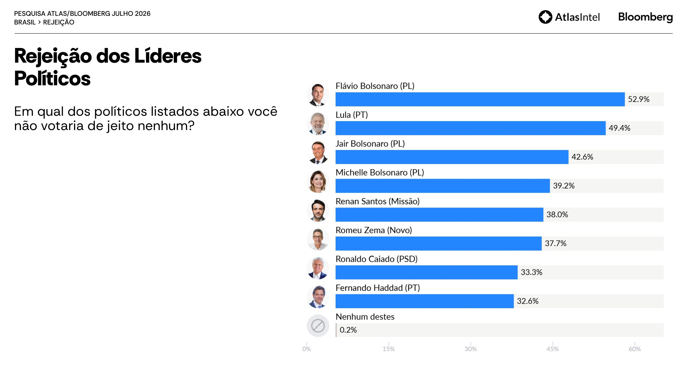
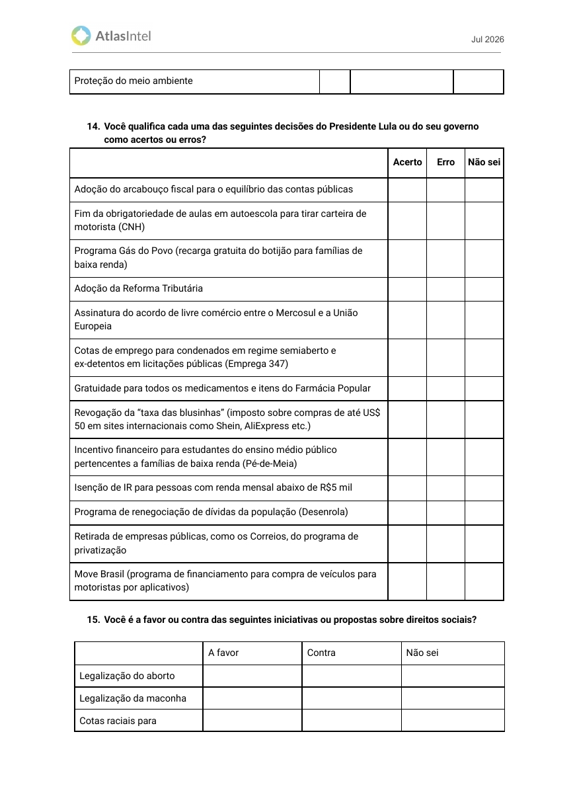

p.p. é o piso matemático
Com n=5.021 e p=50%, uma amostra aleatória simples teria margem máxima de ±1,38, não ±1.
A Atlas chama seu método de Random Digital Recruitment. O material auditável mostra outra coisa: voluntários alcançados durante a navegação, um clique de anúncio rastreável e um questionário ramificado que o registro não documenta. Nada disso torna a pesquisa inútil. Torna-a um mapa do eleitorado conectado, não do país. E, lido assim, o relatório de julho contém o diagnóstico mais duro e mais acionável já publicado sobre a candidatura de Flávio Bolsonaro: na mesma amostra, o pai marca 42,3% e o filho, 35,8%.
Há evidência documental de um mecanismo vulnerável a autosseleção e a otimização algorítmica. Não há evidência de que a Atlas, o Missão ou militantes tenham coordenado respostas. A distinção importa: a fragilidade é real mesmo sem conspiração, e a utilidade também.
Com n=5.021 e p=50%, uma amostra aleatória simples teria margem máxima de ±1,38, não ±1.
Jair marca 42,3% no cenário de 2022 repetido; Flávio, 35,8% no cenário real. Mesma onda, mesmos respondentes.
Atlas mede 7,8%; Datafolha e Quaest, em julho, medem 3%. Diferença maior que quatro “margens Atlas”.
Flávio passou de +14,4 entre mulheres em junho para +5,1 entre homens em julho. A instabilidade ficou.
Uma pesquisa que erra o país pode acertar em cheio a internet do país. É exatamente por ser um painel digital autosselecionado que a Atlas descreve bem o terreno onde uma campanha online opera. E é exatamente por isso que ela não deve ser usada como placar. Regra de uso adotada neste dossiê
A pesquisa faz duas perguntas de voto às mesmas 5.021 pessoas. Uma pede a eleição de 2026 com Flávio. A outra pede a repetição de 2022, com Jair. Isso elimina de uma vez amostra, ponderação, período, questionário e viés de recrutamento: o que sobra na diferença é o preço da transferência do sobrenome. Em nível nacional, o preço é 6,5 pontos. Recorte a recorte, ele não está distribuído: está concentrado.
Entre quem se declara direita bolsonarista, Flávio retém 97,4 dos 99,9 do pai. Não há vazamento no núcleo. Todo discurso desenhado para “segurar a base” está resolvendo um problema que a pesquisa diz não existir, e custa exatamente onde o problema existe.
Os dois maiores buracos, direita não bolsonarista (−20,3) e eleitor sem posicionamento declarado (−19,7), são justamente os grupos que aceitavam Jair sem serem dele. Eram voto emprestado. O empréstimo não foi renovado automaticamente.
−9,0 acima de R$ 10 mil, −8,8 no ensino superior, −8,3 na faixa de R$ 3–5 mil. Ao mesmo tempo, o eleitor de fundamental (−3,4) e o de até R$ 2 mil (−4,8) quase não se mexeram. O custo da sucessão é maior na classe média informada.


A Atlas não publica bases não ponderadas por recorte. A diferença acima é, portanto, descritiva: descreve o que a mesma amostra respondeu a duas perguntas distintas. Não recebe intervalo de confiança e não deve ser transportada para o país sem replicação em pesquisa presencial. Reprodução aritmética completa em atlas_072026_audit.json, chave succession_ledger.
Entre quem declara ter votado em Jair Bolsonaro no segundo turno de 2022, o cenário 1 de 2026 se distribui assim. É o dado mais subestimado da pesquisa, e o mais favorável a Flávio, se for lido com frieza.
Retenção alta para um herdeiro em primeiro turno com cardápio aberto de sete candidatos.
Renan 10,2 · Zema 6,3 · Caiado 5,4 · Cury 2,7. Todos ainda dentro do mesmo campo.
Meio ponto. A tese de que Flávio “perdeu eleitor para o PT” não sobrevive ao próprio relatório.
1,8 “não sei” e 0,1 branco/nulo. Praticamente não há desistência declarada.
A perda de primeiro turno de Flávio é um problema de consolidação, não de conversão. Recuperar 24,7 pontos que já estão na direita é uma operação política. Converter eleitor de Lula seria uma operação cultural. A Atlas diz que a tarefa é a primeira.
No cenário 1, Flávio tem 35,8%. No segundo turno contra Lula, tem 42,9%: sobe 7,1 pontos, praticamente o tamanho da diáspora. Ou seja: o eleitor volta quando o cardápio afunila. Jair, no cenário de 2022, tinha 42,3%. O teto de segundo turno de Flávio hoje é, com precisão desconfortável, o piso de primeiro turno do pai.
O que falta não é a base bolsonarista. É o que existe além dela.
Se a consolidação é quase automática, atacar Renan, Zema ou Caiado tem retorno negativo: o voto já volta sozinho no segundo turno, e o ataque destrói a aliança legislativa que decidirá o Senado e a governabilidade. O custo de brigar hoje é cobrado em 2027, não em outubro.
Ver jogada 01: pacto programático publicado, não acordo de cargos.
Dois pontos separam os dois medos do Brasil. Entre eles, 8,7% que temem os dois, e que decidem a eleição. Esse bloco não é convencido por adjetivo: é convencido por protocolo, prazo e prestação de contas.
A Atlas pergunta qual resultado causa mais medo e, em outro bloco, em quem a pessoa votaria. Cruzando as duas respostas por recorte aparece a métrica mais útil de toda a pesquisa: a lacuna de conversão: quanto de vantagem emocional Flávio já tem e não transformou em voto. Onde a lacuna é grande, o déficit não é de opinião. É de confiança. E confiança se constrói com compromisso verificável, não com tom.
O medo empata. O voto abre 18,2 para Lula. É o maior estoque de voto não convertido da pesquisa.
A faixa que mais teme Lula (55,4 × 31,1) entrega apenas 4,3 pontos de vantagem no voto.
43,9 pontos de vantagem no medo viram 29,4 no voto. Ainda sobra 14,5 sobre a mesa, e Jair tinha 65,4.
O eleitor de menor escolaridade teme mais Lula (+8,8) e ainda vota nele (−2,9). Contradição pura.
A região onde Jair mais caiu (−11,3) é também a que mais teme Lula. Território abandonado, não perdido.
Maior grupo religioso do país, medo quase empatado (−2,5) e voto 13,7 abaixo. O católico é o eleitor decisivo esquecido.

No total, 8,7% temem os dois resultados. O número explode em recortes específicos: 47,3% entre quem votou branco/nulo em 2022, 32,1% entre quem não votou, 26,9% entre 16 e 24 anos e 22,5% na direita não bolsonarista.
É a mesma população dos dois maiores buracos da conta da sucessão. Não é coincidência: quem teme os dois lados é exatamente quem emprestava voto a Jair sem pertencer ao projeto. Reduzir esse medo é aritmeticamente idêntico a recuperar a herança.
Tudo o que segue é hipótese gerada pela Atlas e precisa ser validada contra Datafolha, Quaest, TSE e PNAD antes de virar alocação de recurso. Nenhuma jogada abaixo depende de microtargeting, de mensagem diferente por perfil ou de anúncio opaco: todas são públicas, verificáveis e sobrevivem a citação hostil. Essa é a trava editorial da casa e também a melhor defesa jurídica.
24,7 dos 100 pontos do eleitorado de Jair/2022 estão hoje com Renan, Zema, Caiado e Cury; 0,5 foi para Lula. O voto não precisa ser conquistado: precisa ser reunido.
Instrumento: um pacto programático público de cinco compromissos verificáveis (regra fiscal, segurança integrada, compras abertas, limites institucionais, agenda de produtividade), assinado por campos, não por pessoas, e publicado antes de qualquer conversa sobre cargo.
Nesse recorte o medo empata (47,4 × 47,2) e o voto sangra 18,2 pontos. O eleitor não prefere Lula: ele não confia que a transição preserve o que já recebe.
Instrumento: compromisso escrito, com memória de cálculo publicada, de que nenhum benefício existente é extinto, reduzido ou reprocessado no primeiro ano, com regra de correção explícita, custo anual, fonte fiscal e página de acompanhamento mensal.
Jair marcava 65,4 entre evangélicos; Flávio, 51,5. É a maior perda de bloco identitário do relatório, 13,9 pontos, e é onde a lacuna de conversão ainda vale 14,5.
Instrumento: agenda de liberdade religiosa com casos documentados (não abstrações) somada a um plano social de base comunitária (primeira infância, dependência química, capacitação) com orçamento, contrapartida e prestação de contas. Presença sistemática, não visita de calendário.
Maior grupo religioso do país: medo quase empatado (48,0 × 45,5) e voto 13,7 pontos abaixo. Lacuna de 11,2. Toda a energia religiosa da campanha está alocada no bloco onde a vantagem já existe.
Instrumento: pauta social católica (trabalho, família, cuidado, migração interna, dignidade do idoso) com linguagem própria, não traduzida do repertório evangélico.
Retenção de 94,7% em relação a Jair, e ainda assim 32,2 contra 60,8 de Lula, com 61,2% declarando medo da eleição de Flávio. É o recorte de maior comparecimento do país.
Instrumento: contrato de previdência e saúde: regra de reajuste real do benefício, prazo máximo de fila para consulta e cirurgia, política de medicamento, cada item com indicador oficial e data de aferição.
Entre 16 e 24 anos: Lula 36,9, Renan 25,7, Flávio 9,7. E 26,9% dessa faixa teme os dois. Copiar linguagem digital de adversário só aumenta o protagonismo dele, e a queda de 37,9 para 25,7 de Renan em uma onda mostra que esse eleitorado é volátil, não conquistado.
Instrumento: primeiro emprego, aprendizagem profissional, ensino técnico com colocação regional, com meta, custo por vaga e painel público mensal. Conteúdo, não formato.
Nas doze áreas de governo, as menores distâncias são impostos (+1), equilíbrio fiscal (+1), corrupção (+2) e infraestrutura (+3), e criminalidade está empatada em 46 × 46. As maiores são pobreza (+10) e meio ambiente (+8).
Instrumento: publicar baseline, corte ou realocação, compensação e impacto distributivo de cada proposta econômica antes do horário eleitoral, para que o debate ocorra sobre documento e não sobre adjetivo.
46,6% temem a eleição de Flávio, 44,6% a reeleição de Lula, 8,7% temem os dois. A desvantagem no segundo turno é de 6,3. Mover quatro pontos da coluna “temo Flávio” para “temo os dois” já empata o país.
Instrumento: protocolo institucional publicado: limites constitucionais, rito de decisão em crise, política de correção pública de erro, equipe divulgada antes da eleição, plano D+100 com dependência legislativa explícita. Agressividade performática move o número na direção errada.
Nenhum dos números acima governa sozinho. As jogadas 01 e 07 valem duas vezes se o pacto programático incluir a coordenação de candidaturas ao Senado, e valem zero se a campanha presidencial consumir capital político atacando os campos que elegerão esses senadores.
Instrumento: mapa por unidade da federação cruzando desempenho presidencial Atlas/Datafolha, cadeiras em disputa e viabilidade de aliança, revisado a cada onda de pesquisa. Decisão de recurso vinculada a esse mapa, não à manchete da semana.
A Atlas recruta na navegação, com anúncio pago e questionário longo. Isso a torna péssima como estimador nacional e excelente como retrato de quem está alcançável online e disposto a responder sobre política. É precisamente o público que uma campanha digital consegue tocar.
Instrumento: tratar cada cruzamento Atlas como hipótese; testá-la contra Datafolha e Quaest; só transformar em peça o que sobreviver aos três. E jamais citar “±1 ponto” como precisão em material próprio: a régua da casa vale contra pesquisa favorável também.
Lula lidera onze das doze áreas e empata em criminalidade. Mas a distância não é uniforme: onde ela cabe em um a três pontos, existe disputa real; onde chega a dez, existe um déficit estrutural que slogan não resolve. A fila abaixo ordena o trabalho por distância, não por preferência ideológica.
| Área · Lula × Flávio | Distância | Resposta programática pública | Indicador mínimo |
|---|---|---|---|
| Impostos / carga tributária · 45 × 44 | −1 | Publicar baseline, corte ou realocação, compensação e impacto distributivo antes do horário eleitoral. | carga efetiva, renúncia fiscal, alíquota por decil. |
| Equilíbrio fiscal e gastos · 45 × 44 | −1 | Regra fiscal executável com cenário adverso e teste de choque publicado. | resultado primário, gasto obrigatório, dívida/PIB. |
| Combate à corrupção · 45 × 43 | −2 | Compras abertas, beneficiário final, proteção ao denunciante, integridade de fornecedor da própria campanha. | contratos abertos, conflito declarado, tempo de apuração. |
| Infraestrutura · 47 × 44 | −3 | Carteira de concessões com projeto executivo, licença, financiamento, cronograma e matriz de riscos. | capex contratado, obra entregue, atraso, aditivo. |
| Economia e inflação · 48 × 44 | −4 | Âncora de preços, produtividade e abertura comercial com sequência temporal explícita. | IPCA, investimento, produtividade do trabalho. |
| Política externa · 48 × 44 | −4 | Previsibilidade diplomática, defesa comercial técnica e critério publicado para alinhamento. | exportações, tempo de abertura de mercado, litígios. |
| Geração de empregos · 48 × 43 | −5 | Produtividade, pequenas empresas, aprendizagem e requalificação para 40+, mulheres e jovens. | emprego formal, renda real, custo por vaga. |
| Saúde · 49 × 43 | −6 | Fila única interoperável com prazo máximo por procedimento. | tempo de espera, cirurgia eletiva, cobertura. |
| Educação · 49 × 43 | −6 | Alfabetização na idade certa e ensino técnico vinculado ao emprego regional. | aprendizagem, evasão, colocação profissional. |
| Promoção da democracia · 48 × 42 | −6 | Compromissos explícitos com Constituição, alternância, imprensa e rito institucional de crise. | agenda pública, respostas à LAI, decisões publicadas. |
| Proteção do meio ambiente · 49 × 41 | −8 | Crime ambiental, segurança jurídica no licenciamento e bioeconomia com meta territorial. | desmatamento, prazo de licença, investimento privado. |
| Pobreza e desigualdade · 51 × 41 | −10 | Renda do trabalho, primeira infância, qualificação e transição do benefício para o emprego, com custo por família. | renda domiciliar real, pobreza, formalização. |
| Criminalidade e drogas · 46 × 46 | 0 | Único empate. Metas integradas de homicídio, roubo, fronteira, inteligência financeira e sistema prisional. | taxa por 100 mil, elucidação, apreensão patrimonial. |

O retrato geral, com Lula à frente, Flávio competitivo e segundo turno apertado, conversa com as demais pesquisas. O que singulariza a Atlas está na intensidade, na quase ausência de indecisão e no terceiro colocado digital.
| Indicador | Atlas junho | Atlas julho | Mudança | Leitura |
|---|---|---|---|---|
| Lula · cenário principal | 46,3% | 44,9% | −1,4 | Oscilação pequena diante da incerteza real. |
| Flávio · cenário principal | 36,6% | 35,8% | −0,8 | Essencialmente estável. |
| Renan Santos | 7,8% | 7,8% | 0,0 | Persistência exata apesar da recomposição interna. |
| Renan · 16–24 anos | 37,9% | 25,7% | −12,2 | Ainda oito vezes o nível de Datafolha/Quaest no total. |
| Flávio · diferença por gênero | +14,4 mulheres | +5,1 homens | giro 19,5 | A direção voltou ao padrão usual; o salto é incompatível com “±1”. |
| Lula × Flávio · 2º turno | 48,8 × 42,3 | 49,2 × 42,9 | gap −0,2 | O confronto central ficou estável. |
O giro de 19,5 pontos é a mudança na diferença mulheres–homens entre as duas ondas: em junho, 43,5% das mulheres e 29,1% dos homens marcavam Flávio; em julho, 33,4% das mulheres e 38,5% dos homens. Sob independência e amostragem simples, é uma oscilação de cerca de dez erros-padrão; mesmo com efeito de desenho 2, ainda seria extraordinária.
Lula tem 51,2% de aprovação e 47,6% de desaprovação. A avaliação é 49,3% positiva, 37,9% negativa e 12,7% regular. O formulário mede conceitos diferentes; não é contradição automática.
Lula 43,2%, Jair Bolsonaro 42,3%, Tebet 5,0%, Ciro 4,4%, outro 0,9%, branco/nulo 3,8% e não sabe 0,4%. O nível de certeza é incomum tão longe da urna.
Renan 7,8%, Caiado 3,1%, Zema 2,8%, Samara 2,1% e Augusto Cury 1,6%. Com cardápio reduzido, Lula sobe a 47,4% e Flávio a 37,0%; Renan permanece 7,8%.
Haddad 40,3%, Flávio 36,9%, Renan 8,5%, Caiado 4,2%, Zema 3,0%, branco/nulo 4,6% e não sabe 2,5%. A indecisão reaparece quando a âncora Lula some.
49,2 × 42,9 contra Flávio; 48,8 × 42,5 contra Michelle; 49,2 × 43,9 contra Jair; 48,2 × 38,9 contra Caiado; 48,6 × 39,6 contra Zema; 47,6 × 30,2 contra Renan.
Rejeição: Flávio 52,9%, Lula 49,4%, Jair 42,6%, Michelle 39,2%, Renan 38,0%, Zema 37,7%, Caiado 33,3%, Haddad 32,6%. Apenas 0,2% marcaram “nenhum destes”.


A amostra publicada é muito próxima das metas em sexo, idade, escolaridade e renda. Isso prova que a ponderação consegue reproduzir marginais conhecidas. Não prova que pessoas politicamente equivalentes tenham a mesma probabilidade de clicar num anúncio.
| Dimensão | Meta Atlas/TSE | Publicado | Referência independente | Auditoria |
|---|---|---|---|---|
| Sexo | 47,2 H · 52,8 M | 47,7 H · 52,3 M | TSE: 47,18 · 52,82 | Fecha. |
| Idade 60+ | 23,2% | 22,0% | TSE: 23,27% | −1,2 p.p.; excede em 0,2 a tolerância declarada. |
| Sudeste | não exposta no registro | 44,4% | TSE: 42,02% | +2,38 p.p. |
| Nordeste | não exposta no registro | 26,5% | TSE: 27,58% | −1,08 p.p. |
| Escolaridade | 33,8 · 40,7 · 25,5 | 33,3 · 40,7 · 26,0 | PNAD 16+: 33,23 · 41,58 · 25,19 | Próxima ao alvo. |
| Renda familiar | 22,4 · 17,1 · 23,1 · 23,9 · 13,5 | 22,1 · 17,9 · 23,2 · 23,4 · 13,3 | PNAD 2024 declarada pela Atlas | Fecha com o alvo, mas o alvo é de 2024. Ver seção 9. |
TSE nacional residente, exterior excluído: 157.846.602 eleitores, competência junho/2026. A própria Atlas declara PNADC 2024 para escolaridade e renda. Os percentuais registrados reproduzem a distribuição PNAD bruta arquivada no repositório; valores atualizados e deflacionados mudam a composição econômica.
Duas pessoas podem ter o mesmo sexo, idade, renda, escolaridade, região e voto passado, e ainda assim probabilidades radicalmente diferentes de ver um anúncio político, clicar, tolerar um questionário longo e concluí-lo. Pós-estratificar seis marginais não corrige interesse político, intensidade militante, uso de Instagram e Google, confiança institucional ou disponibilidade de tempo.
O relatório fala em população adulta brasileira, mas o formulário aceita 16 e 17 anos e o registro descreve características do eleitorado. A diferença textual é pequena e metodologicamente relevante: o universo precisa ser único e verificável.
O registro no TSE diz, com todas as letras: “FONTE DOS DADOS: PNADC 2024 para escolaridade e nível econômico”. E as cinco faixas da cota são em reais nominais: até R$ 2.000, R$ 2.000–3.000, R$ 3.000–5.000, R$ 5.000–10.000, acima de R$ 10.000. Duas coisas decorrem disso, e o relatório não trata nenhuma: um limiar nominal fixo aplicado à renda de dois anos atrás não descreve o mesmo domicílio; e a PNADC anual de 2025 foi divulgada em maio de 2026, dois meses antes deste campo. Usar a de 2024 é escolha, não limitação.
Toda conta desta seção usa o universo que a pesquisa diz medir: pessoas de 16 anos ou mais, que é o piso da idade eleitoral e o mesmo corte que o formulário da Atlas aceita, com a renda domiciliar de todas as fontes (VD5007) e o peso calibrado do IBGE (V1032). São 168,3 milhões de pessoas na PNADC 2025.
Em 2025 são R$ 3.036 e em 2026, R$ 3.242. O domicílio mais comum do Brasil atravessa o teto de R$ 3.000 sem ganhar um centavo de poder de compra, e muda de faixa na cota.
Em 2024, essa fração da população de 16+ vivia em domicílios entre R$ 2.700 e R$ 3.000, ou 42% de toda a faixa 2, empilhados contra o teto. Em 2025 restam 2,6%: eles atravessaram.
Expressando a mesma PNAD 2024 a preços de abril/2026, a faixa R$ 2.000–3.000 cai de 17,3% para 11,9%. Sem trocar de safra. Só corrigindo a régua.
Reponderando pela PNADC 2025 a preços de 2026, a distância Lula–Flávio vai de 9,24 para 10,15. É quase uma “margem Atlas” inteira produzida por uma decisão de vintage.
Distribuição da renda familiar entre pessoas de 16 anos ou mais, variável VD5007 (rendimento domiciliar habitual de todas as fontes), peso V1032. “A preços de abril/2026” = último mês da série IPCA arquivada no repositório; o campo foi em julho, então a correção real é ainda maior.
| Régua | até 2 mil | 2–3 mil | 3–5 mil | 5–10 mil | +10 mil | O que ela é |
|---|---|---|---|---|---|---|
| Cota registrada no TSE | 22,4 | 17,1 | 23,1 | 23,9 | 13,5 | O alvo que a Atlas se impôs, declarado como PNADC 2024. |
| Amostra publicada | 22,1 | 17,9 | 23,2 | 23,4 | 13,3 | Fecha com o alvo. A ponderação funciona; o alvo é que é velho. |
| PNADC 2024 · nominal | 20,3 | 17,3 | 24,0 | 24,6 | 13,8 | Nossa reprodução da safra declarada, em pessoas de 16+. |
| PNADC 2024 · a preços de abr/2026 | 19,2 | 11,9 | 27,6 | 26,0 | 15,3 | A mesma pesquisa, só com a régua corrigida. Isola o efeito da faixa nominal. |
| PNADC 2025 · nominal | 16,7 | 11,4 | 27,4 | 27,3 | 17,3 | A safra disponível desde maio de 2026. |
| PNADC 2025 · a preços de abr/2026 | 16,4 | 11,1 | 27,0 | 27,7 | 17,8 | A régua que uma pesquisa de campo em julho de 2026 deveria usar. |
Reponderação em uma única margem, mantendo fixo o voto dentro de cada faixa (cruzamento de renda das páginas 20 e 21). É análise de sensibilidade, não estimativa corrigida: a ponderação da Atlas é conjunta e não é pública. A distribuição publicada reproduz o topline com precisão de 0,1 ponto, o que valida o exercício.
| Régua usada para reponderar | Lula | Flávio | Renan | Zema | Gap Lula−Flávio |
|---|---|---|---|---|---|
| Amostra publicada (referência) | 45,02 | 35,78 | 7,73 | 2,80 | 9,24 |
| PNADC 2024 · a preços de abr/2026 | 45,07 | 35,44 | 8,07 | 3,02 | 9,63 |
| PNADC 2025 · nominal | 45,11 | 35,15 | 8,21 | 3,12 | 9,96 |
| PNADC 2025 · a preços de abr/2026 | 45,20 | 35,05 | 8,23 | 3,14 | 10,15 |
| Variação máxima | +0,18 | −0,73 | +0,50 | +0,34 | +0,91 |
Flávio é forte exatamente nas duas faixas do meio (40,9 e 41,4) e fraco no topo (24,1). Corrigir a régua tira peso do meio e devolve ao topo, onde Lula tem 52,8 e Renan tem 9,3. A cota velha estava, sem intenção, inflando o candidato do meio.
Ninguém deve dizer que a pesquisa “vira” com isso. O deslocamento é de décimos. Mas a Atlas publica ±1 p.p. como intervalo de 95%, e uma única decisão de vintage, feita por eles, move o gap em 0,91. Ou o erro deles é maior que o anunciado, ou o anúncio é retórico.
Não é a reponderação completa da Atlas: é uma margem só. A comparação 2024×2025 usa visitas diferentes do painel anual (visita 5 e visita 1), o que pode adicionar diferença de composição; por isso a linha decisiva é a PNADC 2024 a preços de 2026, imune a essa objeção. E a deflação usa abril/2026 porque é o último mês do IPCA arquivado: com julho, a distância aumenta.
Objeção justa: 16+ é uma escolha. Então repetimos a conta variando só o universo, sobre a PNADC 2025 a preços de abril/2026. Não depende, e o corte que adotamos é o mais conservador entre os elegíveis a voto.
| Universo | População | até 2 mil | 2–3 mil | 3–5 mil | 5–10 mil | +10 mil | Gap Lula−Flávio |
|---|---|---|---|---|---|---|---|
| Todas as idades | 212,6 mi | 17,4 | 12,1 | 26,7 | 26,9 | 17,0 | 9,96 |
| 16 anos ou mais (adotado) | 168,3 mi | 16,4 | 11,1 | 27,0 | 27,7 | 17,8 | 10,15 |
| 18 anos ou mais | 162,4 mi | 16,2 | 11,0 | 27,1 | 27,8 | 17,9 | 10,15 |
| 25 anos ou mais | 140,9 mi | 16,2 | 10,7 | 27,1 | 27,6 | 18,4 | 10,28 |
| Referência: amostra publicada da Atlas | 9,24 | ||||||
O gap cresce em todos os cortes, de +0,72 (todas as idades) a +1,04 (25+). Usar 16+ não força o resultado: é a leitura mais contida possível dentro do universo eleitoral, e ainda assim o deslocamento supera a margem de ±1 que a pesquisa publica.
O endereço salvo do questionário contém gclid, gad_source e gad_campaignid. O Google explica oficialmente que o GCLID acompanha cliques de anúncios para atribuição. Nesta resposta, o recrutamento pago é fato documental.
A Meta informa que o leilão usa, entre outros fatores, a taxa estimada de ação. O Google identifica e atribui o clique. Nenhuma plataforma promete entregar amostra equiprobabilística do eleitorado.
Estudo na Public Opinion Quarterly, com 23 anúncios e mais de 30 mil respondentes, mostrou que o conteúdo do anúncio altera custo e composição; anúncios políticos atraíram perfis diferentes.
O Pew encontrou que variáveis políticas de ajuste importam mais que demografia isolada. Outro teste encontrou erro absoluto médio de 6,4 pontos em amostras opt-in, contra 2,3 em amostras aleatórias.
A literatura não diz que recrutar em rede é sempre inútil. Pesquisas recentes mostram velocidade, baixo custo e utilidade para exploração e experimentos; mostram também sobrerrepresentação de escolarizados e conectados, falhas de segmentação e resíduos políticos que pesos demográficos não eliminam. O problema da Atlas é vender robustez sem publicar o diagnóstico que a sustentaria.
O questionário registrado enumera 54 perguntas como sequência única. O HTML preservado expõe grupos de sorteio e roteamento; o respondente recebeu apenas uma das versões de certos blocos. Isso pode ser um split ballot legítimo. Sem probabilidades de alocação e bases por ramo, não é reprodutível.
O PDF registrado aparenta sequência única.
Incluem variantes nacionais e condicionais estaduais.
O número de telas não representa a carga real.
Matrizes multiplicam o esforço cognitivo.
| Bloco | PDF registrado | Caminho respondido | Problema auditável |
|---|---|---|---|
| Partido | “maiores problemas” | “direitos sociais” | O cliente contém as duas variantes no grupo partido. |
| CCI | confiança econômica e compras | decisões do governo Lula | Ramos mutuamente alternativos sem taxa de alocação. |
| Inflação | expectativa de 6 meses | 12 meses e 5 anos | Horizonte diferente muda o constructo medido. |
| Direitos | não traz cota trans | adiciona “cotas para pessoas trans” | Item aplicado ausente no documento registrado. |
| Decisões Lula | inclui cota para ex-presidiários | item não apareceu | O ramo aplicado não espelha a lista registrada. |
| Governadores | blocos estaduais achatados | condicional à UF | Base analítica é estadual, não os 5.021. |
| Cenário 1 | ordem começa por Lula | ordem começa por Hertz Dias | Ordem e rótulos partidários não são idênticos. |

O PDF respondido contém escolhas políticas e dados demográficos do participante. Em vez de expor esse material sensível, a comparação acima foi refeita contra o texto extraído e o estado estruturado do formulário salvo.
Identificadores individuais, token de sessão, bairro, idade, horário detalhado e respostas pessoais não aparecem neste dossiê. A prova metodológica independe de divulgá-los.
A impressão foi gerada em 29/07 às 02:16, após o fim de campo declarado em 27/07, e ainda mostrava “Enviar”. Isso prova que o endpoint permaneceu funcional; não prova que a resposta tardia entrou nos 5.021 casos.
O registro no TSE prevê 5.000 entrevistados; o relatório publica 5.021. A diferença é pequena e pode ser rotina de campo, mas o desvio para cima em amostra não probabilística deveria vir com a trilha que reconcilia previsto e realizado: quantos casos entraram, quantos foram descartados e por qual critério.
Renan está consolidado como candidato há tempo suficiente para dispensar apresentação. A questão útil não é se ele existe: é qual tamanho deve orientar recursos, alianças e agenda. Atlas diz 7,8%; Datafolha e Quaest dizem 3%. A campanha não deve escolher o número conveniente: deve trabalhar com cenários e gatilhos.
| Sinal | Atlas julho | Referência | Utilidade para a decisão |
|---|---|---|---|
| Intenção nacional | 7,8% | Datafolha 3% · Quaest 3% | Usar 3%–5% como faixa-base de planejamento; tratar 8% como cenário de estresse até replicação independente. |
| Persistência Atlas | 7,8% em junho e julho | composição interna mudou muito | O agregado está imóvel enquanto gênero e idade giram. Parece mais estabilidade produzida pelo ajuste do que eleitorado congelado. |
| Homens × mulheres | 13,2% × 2,8% | gap de 10,4 p.p. | Concentração masculina compatível com base digital específica; não projetar o mesmo crescimento sobre o eleitorado inteiro. |
| 16–24 anos | 25,7% | 37,9% em junho | Queda de 12,2 pontos em uma onda, ainda muito acima do total. Recorte altamente volátil, não domínio consolidado. |
| Direita não bolsonarista | 28,6% | sem benchmark externo equivalente | Terreno real de competição programática, e o mesmo bloco onde Flávio perdeu 20,3 pontos do pai. |
| Eleitores de Jair/2022 | 10,2% | sem base não ponderada publicada | Existe vazamento dentro do próprio campo. Acompanhar em série multimétodo, não combater com ataque pessoal. |
| Rejeição · 2º turno | 38,0% · 30,2% | Lula 47,6% nesse confronto | O primeiro turno não se converte em capacidade majoritária. O adversário estruturalmente perigoso é outro. |
Comparar as duas pesquisas em bruto não vale: a Atlas registra 1,6% de branco, nulo e “não sei” contra 11% do Datafolha, e esses 9,4 pontos comprimem mecanicamente todas as porcentagens de uma delas. Sobre votos válidos, a comparação fica limpa, e o resultado é o achado mais nítido desta auditoria.
| Candidatura | Atlas bruto | Datafolha bruto | Atlas válidos | Datafolha válidos | Razão |
|---|---|---|---|---|---|
| Renan Santos (Missão) | 7,8 | 3,0 | 7,93 | 3,45 | 2,30× |
| Samara Martins (UP) | 2,1 | 1,0 | 2,13 | 1,15 | 1,86× |
| Lula | 44,9 | 40,0 | 45,63 | 45,98 | 0,99× |
| Flávio Bolsonaro | 35,8 | 32,0 | 36,38 | 36,78 | 0,99× |
| Romeu Zema | 2,8 | 3,0 | 2,85 | 3,45 | 0,83× |
| Augusto Cury | 1,6 | 2,0 | 1,63 | 2,30 | 0,71× |
| Ronaldo Caiado | 3,1 | 4,0 | 3,15 | 4,60 | 0,69× |
Dois desenhos opostos, recrutamento por anúncio e abordagem em ponto de fluxo, chegam ao mesmo lugar nos dois maiores candidatos, com diferença de um centésimo. Isso derruba a leitura preguiçosa de que o painel online “erra tudo”, e é justamente o que torna a divergência restante significativa.
Quem infla junto com o Missão é a UP, de extrema esquerda (1,86×). Quem encolhe são dois governadores e um candidato de público mais velho. Candidaturas de movimento aparecem maiores; candidaturas de estrutura, menores. O padrão atravessa o espectro, logo não descreve preferência do instituto.
Um desenho em que o respondente se autosseleciona premia quem quer responder. Militância tem isso de sobra. Responder custa um clique; votar custa um domingo e um voto por pessoa, sem prêmio por entusiasmo. A razão mede a distância entre os dois desenhos, não a verdade.
“Margem de erro” mistura incertezas diferentes. Com os dados publicados, a aritmética elementar basta. O restante precisa ser apresentado como sensibilidade e erro total, não como precisão clássica.
Acaso simples, sem peso, cobertura perfeita e nenhuma seleção. A Atlas publica valor menor.
Faixa ilustrativa se o efeito de desenho estiver entre 1,5 e 2,5. A Atlas não publica DEFF nem tamanho efetivo.
Nossa melhor estimativa de leitura, ancorada na divergência concorrente e em estudos opt-in. Não é IC formal.
Jovens, nichos ideológicos e ramos do formulário têm bases efetivas não divulgadas e seleção mais concentrada.
A thread de 29/07 distingue oportunidade militante de coordenação. A crítica central é estatística: uma metodologia com alto risco de seleção precisa reconhecer, medir e comunicar esse risco. “Acertou eleição passada” é validação incompleta, sujeita a overfitting, mudanças de método, cancelamento de erros e escolha do ponto de comparação.
O que os comentários provam: que a vulnerabilidade é conhecida, que existe incentivo para exploração estratégica e que defensores reagem com argumento de autoridade. O que não provam: que os perfis sejam militantes coordenados, funcionários ou agentes de Atlas e Missão; que alguma campanha tenha alterado os 5.021 casos; ou que o instituto tenha agido com dolo.
Nenhuma das duas sorteia o Brasil. E é justamente porque erram em direções opostas que, lidas juntas, dizem mais do que qualquer uma delas sozinha.
A própria Atlas escreve, na página de metodologia, que o RDR evita “o eventual impacto psicológico da interação humana” presente em pesquisas “presenciais domiciliares ou em pontos de fluxo”. É uma descrição correta do método concorrente, e uma confissão involuntária de que os dois desenhos selecionam populações diferentes. Os cruzamentos confirmam: nos mesmos dias de julho, os dois institutos discordam sobre a forma de classe do eleitorado bolsonarista.
| Recorte | Atlas · 1º turno (Flávio − Lula) | Datafolha · 2º turno (Flávio − Lula) | O que não fecha |
|---|---|---|---|
| Ensino superior | −28,6 | +9 | Numa pesquisa o diplomado é o pior eleitorado de Flávio; na outra, o melhor. |
| Renda mais alta | −28,7 (>R$10 mil) | +6 (>10 SM) | O gradiente de renda tem sinal oposto nos dois desenhos. |
| Ensino fundamental | −2,9 | −25 | Atlas quase empata onde o Datafolha mostra abismo. |
| 35 a 44 anos | +6,3 | +15 | Mesma direção, intensidade muito diferente. |
| 60 anos ou mais | −28,6 | −18 | Mesma direção; o online amplia. |
| Sul | +27,5 | +16 | Mesma direção; o online amplia. |
| Nordeste | −44,5 | −33 | Mesma direção; o online amplia. |
A comparação de nível só é válida sobre votos válidos, e feita assim mostra coincidência quase perfeita nos dois grandes; ver o prêmio de intensidade na seção 12. Aqui a comparação é de direção, não de nível: a coluna Atlas é primeiro turno com sete candidatos (Renan absorve 5,9 entre superiores e 9,3 na faixa acima de R$ 10 mil) e a coluna Datafolha é segundo turno com dois nomes. Parte da distância é cardápio. Mas cardápio não inverte sinal, e em escolaridade e renda o sinal está invertido.
Recrutamento por leilão publicitário favorece quem navega muito, tem opinião política forte o suficiente para clicar num convite sobre eleição e paciência para mais de cem decisões. Sobra jovem homem conectado e politicamente intenso; falta quem só usa o celular para WhatsApp e vídeo.
Ponto de fluxo entrega quem está fora de casa no horário da abordagem: aposentado, trabalhador informal, estudante, quem faz compra no centro. Falta quem está em escritório, em turno fechado, em condomínio ou trabalhando de casa. Nenhum dos dois é o eleitorado.
A Atlas não publica funil por origem, DEFF nem base não ponderada. O Datafolha não publica probabilidade de seleção do município, estrato, nem efeito de desenho, embora entregue exatamente seis entrevistas por setor censitário, que é a definição de conglomerado. Falta o mesmo item nos dois: o número que permitiria calcular a incerteza de verdade.
Se o recrutamento e os pesos são tão robustos quanto a Atlas afirma, os diagnósticos abaixo sobrevivem à luz. Se não sobrevivem, o problema nunca foi a auditoria.
Impressões, cliques, inícios, conclusões e descartes separados por Google, Meta, orgânico, domínio, campanha, criativo, dia e hora.
Imagem, texto, objetivo de otimização, público, exclusões, orçamento, lance e relatório de entrega de cada anúncio.
JSON integral com hash, lógica de ramo, probabilidades de randomização, ordem e base não ponderada de cada pergunta.
Distribuição dos pesos, truncamento, variáveis e interações, DEFF, n efetivo e resultados antes e depois do ajuste.
Regras de IP e dispositivo, duplicidade, velocidade, respostas em linha reta, bots, VPN, geolocalização e checagem manual.
Renan por origem de tráfego, criativo, hora, velocidade de resposta e comportamento eleitoral; publicar estabilidade ao remover cada campanha.
Submissões após 27/07, status de aceitação e trilha que reconcilie 5.000 previstos com 5.021 publicados.
Arquivo anonimizado ou acesso seguro para replicação independente, preservando privacidade e removendo identificadores de campanha individual.
Pré-registrar o modelo antes do campo e medir erro contra benchmarks não usados no peso, em vez de escolher validação depois do resultado.
Trocar “margem de erro” por medida com nome correto, premissas explícitas, simulação de sensibilidade e cobertura histórica.
As jogadas da seção 5 só existem se houver máquina para sustentá-las. O desenho abaixo é digital porque versiona, calcula e publica, não porque persegue pessoas com mensagens diferentes.
ID único por alegação, fonte primária, cálculo reproduzível, revisor, grau de certeza e histórico de correção. Toda manchete entra numa fila: confirmada, incompleta, enganosa ou não verificável.
SLA: cheque preliminar em 30 min; nota documentada em 4 h.
Cada proposta contém problema PNAD/TSE, público elegível, desenho, custo anual, fonte fiscal, implantação federativa, responsável e três metas.
Trava: nada vai ao ar sem baseline, memória de cálculo e cenário adverso.
Decretos possíveis, projetos dependentes do Congresso, nomeações críticas, riscos fiscais e contratos prioritários, com matriz RACI e caminho crítico.
Entrega: plano D+1, D+30 e D+100.
Comparar automaticamente registro TSE, questionário, campo, setores, cotas, pesos, contrato, nota e manchetes. A mesma régua usada contra Atlas vale para pesquisa favorável.
Entrega: scorecard de transparência em até 24 h.
Nível 1: pedido técnico ao instituto. Nível 2: solicitação de documento. Nível 3: nota pública. Nível 4: representação ao TSE somente com requisito normativo, fato, prova, nexo e pedido proporcional.
Trava: “fraude” só aparece com evidência de dolo.
Rotular cada peça; dupla revisão para número; proibir recorte sem base e comparação sem mesma pergunta ou período. Página de correções com erro, impacto e horário.
Métrica: correções por 100 peças e tempo para corrigir.
SSO com chave física, privilégio mínimo, MDM, criptografia, sala de dados, inventário de fornecedor, logs imutáveis, backup testado e canal seguro para denúncia.
Rotina: simulação mensal de phishing e comprometimento de fornecedor.
15 min: preservar evidência. 30: classificar fato, dano e incerteza. 60: decisão técnica e jurídica. 120: nota factual ou justificativa pública para aguardar.
Trava: nunca preencher lacuna com versão conveniente.
Custo, premissa, fonte, indicador, responsável, conflito de interesse, versão e execução simulada. Anúncios apenas apontam para a mesma página pública.
Diferencial: competir por capacidade de governo, não por microtargeting invisível.
Rejeição, medo, inconsistência programática, promessa sem financiamento, exposição jurídica, fornecedor e contradição pública, cada um com probabilidade, impacto, dono e limiar de escalada.
Top 3 Atlas: rejeição 52,9; medo 46,6; déficit de 10 pontos em pobreza.
Evidence desk, taxonomia de certeza, sala de dados, política de correção e inventário de acessos.
Quatro propostas custeadas (garantia de renda, emprego jovem, previdência e desigualdade regional), mais plano D+100.
Portal de transparência, scorecard de pesquisas, simulação de crise e primeira prestação de contas aberta.
Documentos locais examinados: Atlas_0726.pdf, Atlas_TSE_0726.pdf, Atlas_Questionario_0726.pdf, Atlas_QuestionarioRespondido_0726.pdf, Atlas_Bairros_0726.pdf, página HTML preservada, declaração e DRE. Nenhum token de sessão ou dado pessoal foi publicado. Os cruzamentos das seções 2, 3, 4, 6 e 9 foram transcritos das páginas 16, 20, 21, 38 e 39 do relatório, publicadas como imagem.